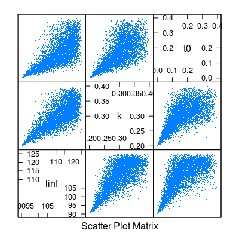

mvrcop(n, mvdc, ...)
FLModelSim objectFLModelSim object with n groups of parameters
Simulates model parameters with user-defined copulas and marginals.
mm <- matrix(NA, ncol=3, nrow=3) diag(mm) <- c(100, 0.001,0.001) mm[upper.tri(mm)] <- mm[lower.tri(mm)] <- c(0.1,0.1,0.0003) vb <- FLModelSim(model=~linf*(1-exp(-k*(t-t0))), params=FLPar(linf=120, k=0.3, t0=0.1, units=c("cm","yr^-1","yr")), vcov=mm, distr="norm") pars <- list(list(a=90, b=125, c=120), list(a=0.2, b=0.4), list(a=0, b=0.4, c=0.1)) vbSim <- mvrcop(10000, vb, copula="archmCopula", family="clayton", param=2, margins="triangle", paramMargins=pars) boxplot(t(predict(vbSim, t=0:20+0.5)))splom(data.frame(t(params(vbSim)@.Data)), pch=".")